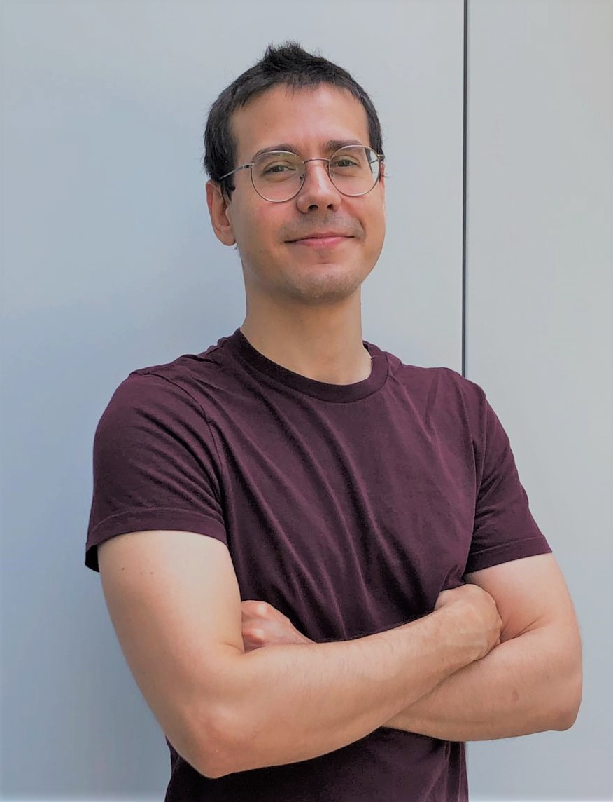

About

I am Batuhan! I am a scientist-in-training, exploring brain mechanisms that allow us to adapt and learn.
I started my journey in neuroscience when I was an intern in a laboratory. Our limited knowledge in the working principles governing the brain sparked my interest to pursue a graduate level degree in this field. Thereafter, I moved to Ankara do a masters degree in neuroscience at Bilkent University Computational and Biological Vision Group. I worked in a project to where we established a population receptive field protocol for retinotopic mapping of visual cortex of humans. Througout this project, I gained substantial experience in data collection, optimized fRMI sequences, visual stimuli to generate visual cortex maps with highest quality. I also gained immense experience in computational models to analyse biological data and automatized the data processing pipelines.
After I got my masters degree, I moved to US start my PhD journey in 2019. I am currently a PhD candiate in Neuroscience in Rutgers University in Polack Lab. Although we were hit by COVID in March 2020, we managed to produce very exciting scientific articles explaining critical questions on how brain changes during learning (see Research).